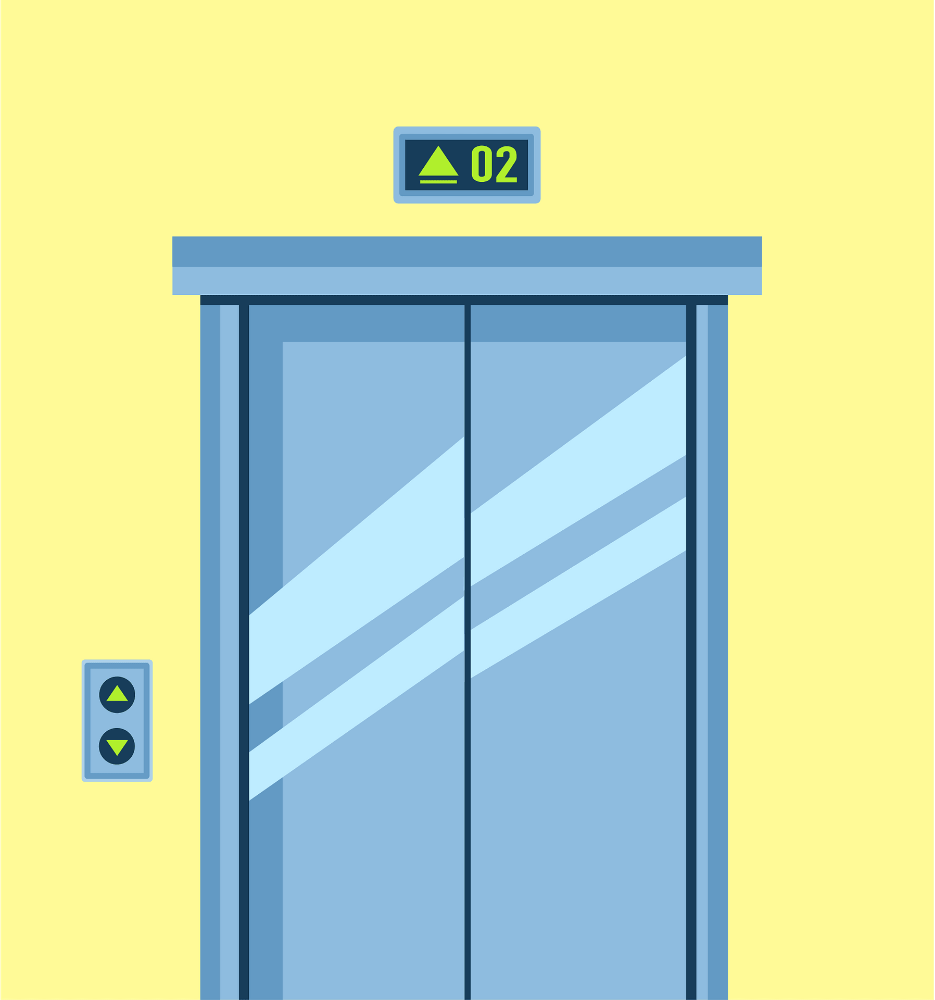
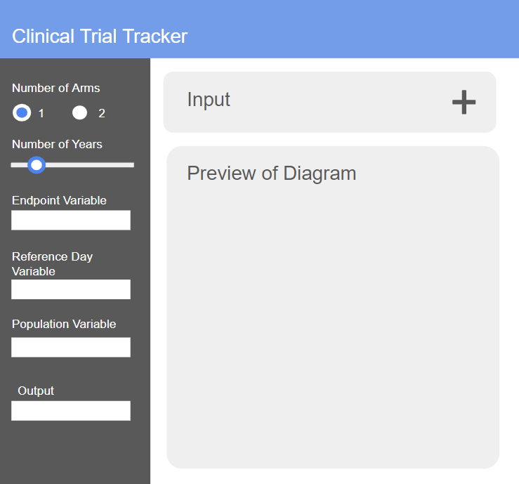
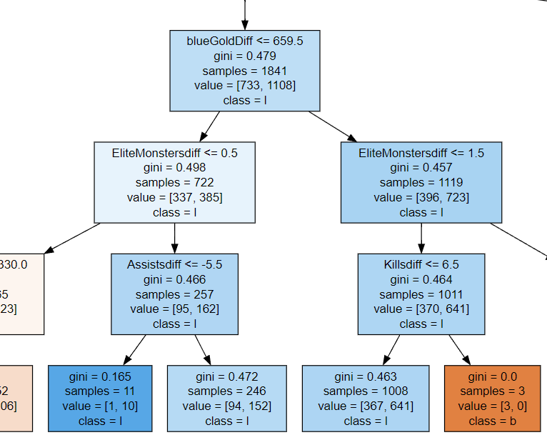

note: mobile users can tap on the images for project description. both clicking and hovering work on desktop!!

End-to-end text generator built with a fine-tuned version of GPT2, hosted on Streamlit as a web app. Creates your own personalized elevator pitch!
Elevator Pitch Generator with LLM
Pytorch, GPT2, LLM Fine-Tuning, Transformers, Streamlit
Web App |
GitHub

Language model built with Pytorch trained on IT support related chatlogs. (still under construction)
Tech Support Chatbot
Pytorch, NLP, Neural Networks, Deep Learning
GitHub
Logistic regression model that predicts if a patient was at risk of heart disease. Used feature engineering, ridge regularization, and likelihood tests.
Predicting Coronary Heart Disease with Regression
Logistic Regression, R
Report

Feedforward neural network that predicts if a patient is a risk for diabetes or not.
Diabetes Diagnosis Classifier with Neural Networks
Tensorflow, Neural Networks, Deep Learning
Report |
GitHub

Survival analysis on clinical trial for throat cancer. Performed analysis with Cox regresion, Cox PH, Kaplan-Meier, and log-rank tests.
Clinical Trial on Treatment for Pharyngeal Cancer
Survival Analysis, Biostatistics, SAS
Report
Web scraping bot that extracts job data such as title, salary, and location from Indeed. There was supposed to be more but... I ran out of API keys.
Web Scraping Indeed Job Postings
Python, BeautifulSoup, web scraping, data mining
Kaggle

Dashboard I worked on during my time at Edwards Lifesciences. Categorizes patients by their trial status as specified by the biostatisticians, and generates a consort diagram.
Clinical Trial Tracker Dashboard
R, R shiny
Python Flask application I built at Edwards Lifesciences. Automatically annotates Case Report Forms (CRF) with CDISC
standards for submission to the FDA
Flask App for Automatic CRF Annotations
Python, NLP, Flask
Website hosted on AWS that archives Dungeons and Dragons campaigns run by me and my friends. Indefinitely under construction 😿
City of Mist Website
HTML, CSS, Javascript, UI/UX, AWS
Website |
GitHub

Predicting win probability in League of Legends with a variety of machine learning methods.
League of Legends Win Probability Predictor
Python, Decision Trees, Random Forest, XGBoost, sklearn
Kaggle